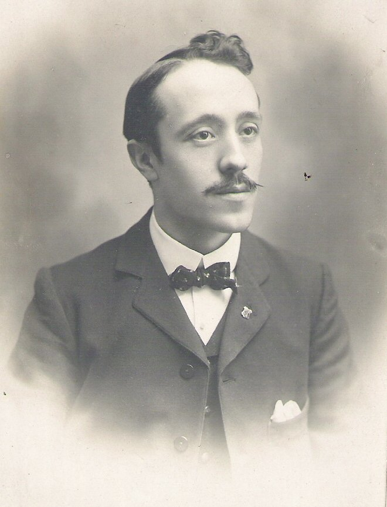

Leon Forestier 1874-1951 Born François Léon Forestier in Geneva, Switzerland on 9 June 1874. Leon was the son of Antoine Forestier, a Commision Agent, and Marie Julie Tirefort. Leon Forestier was a typical watchmaker craftsman. He attended the famous College of Horology where he was the outstanding student of his year. When he had completed his course - with the highest honours - he was persuaded to travel to Coventry to work for Rotherhams's. While there he met his future wife. In January 1898 he married Elizabeth Smith at St Peters Church. He was 24 and living at 38 Priory Street. He gave his occupation as ‘watchmaker’. Witness to the marriage was his friend Fritz Thiebaud. In 1900 Forestier appears in the Coventry trade directory at 47 Craven Street as a Case Springer. After Craven Street he moved to 27 Gloucester Street and appears in the 1901 Census, he then traded from ‘Helvetia’, Albany Road and finally moved to Earlsdon Avenue South (then Earlsdon Lane) to a new house which he named ‘Geneve’. While working at Rotherham's he started to build up business for himself, finally leaving them to set up on his own account in 1907. From the advertisement in the 'Horologist' in 1907 it can be seen that he was capable of very highly specialised work, in fact at one point he created a record at the Kew Observatory for the timekeeping accuracy of one of his watches and during the 1914/18 war he made chronometers for the Admirality. Unfortunately he was too meticulous a craftsman, using only materials of the very highest quality. In taking so long in bringing his work to the peak of perfection he felt essential, whether in making a new timekeeper or repairing an old one, and with work becoming increasingly scarce anyway, he found great difficulty in earning a good living. So much so that he opened a tiny sweet shop in the Working Mens Club building on Earlsdon Street as a sideline, in which his very pretty wife served from 1911 until war broke out in 1914, after which he lived precariously with ever decreasing custom. Although there are no entries for him in the trade directories, he is known to have worked, mainly on repairs to a lesser and lesser degree until about 1926. Leon moved to Weymouth in 1926 and remarried in 1936. He died in Weymouth in 1951. From Brown Boots in Earlsdon by Mary Montes, with additional material from Jill Prime, Coventry Watchmaking Museum. |